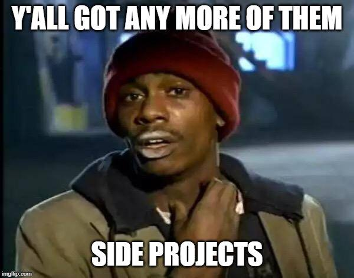
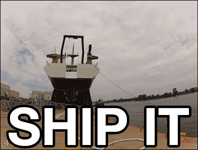
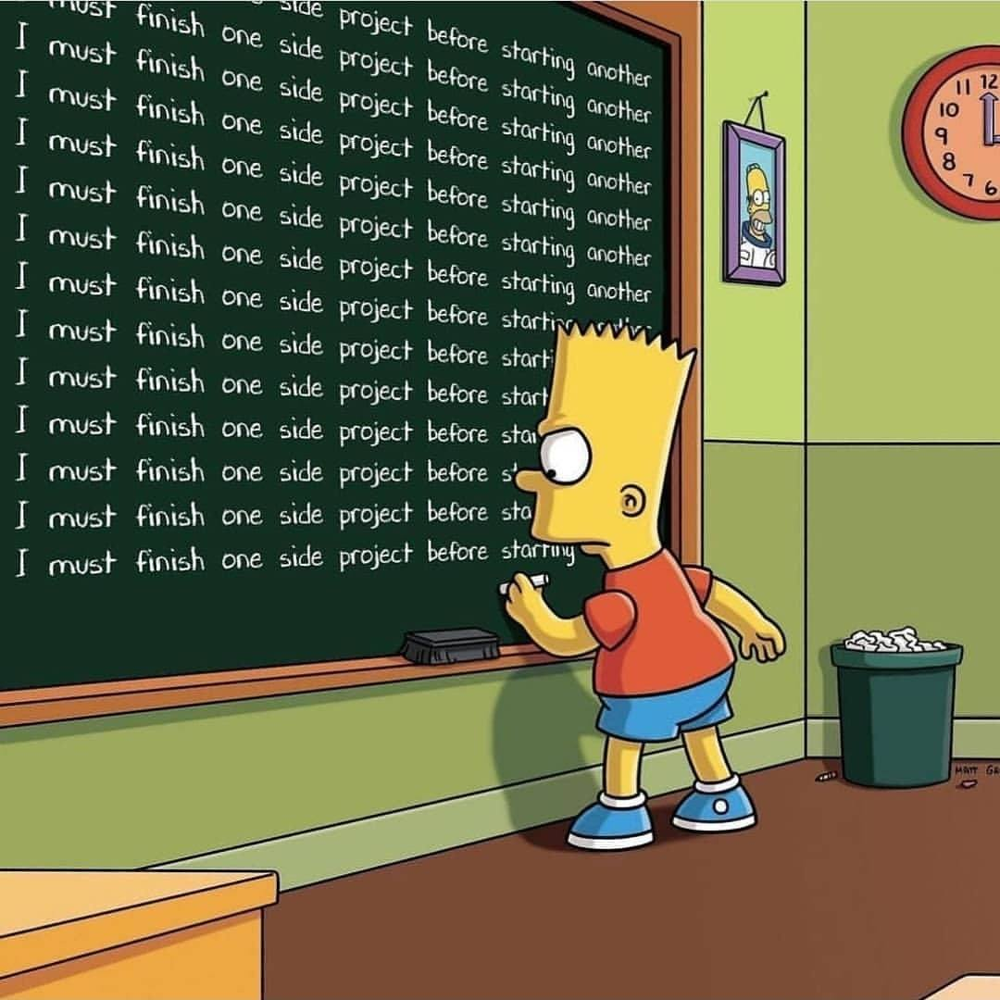

I am probably the least qualified to write anything on how to manage Side Projects.
I have (like many Software Engineers) too many side projects. I think it is due to the intoxicating ☠ feeling of starting a project that has a lot of potential.

There have been many weekends where I would curse myself for having started side projects and not finished them, leaving me with 5 or more projects running simultaneously while trying to hold down a full time job. So instead of me trying to give advice on how to manage side projects, I am writing this blog post to start a discussion (maybe) but also force myself to do a little research on what the internet says and then present those ideas as my own in this article... Just kidding 🃏, let's just discover some solutions to:
SideProject-ophilia ™
Simplest solution
Stop.
This didn't need any research, it's pretty much common sense. If something that you are doing is making you sad, then stop doing it 🤷♂️.
MVP

I think Hendrik Ewerlin has a really good point here, release your side project! Once it is publicly accessible, you are tied to it. It becomes harder to flip flop between projects when you have something in the wild that you need to look after.
Another advantage is exposure to releasing applications. A lot of the time the release of an application is a painful process. This ties in with my next point.
Finish

You can get really comfortable in a dev environment. The project is born/started on your local machine and lives there until it is released to the public. This helps us focus on our application and it's business rules and logic. But sooner or later we will have to deal with things that a released app needs like domain names, CORS, HTTPS certificates, routing, load balancing, SEO, CDN, Service Workers and so on. As "full stack developers" we need all of those skills.
Closing Summary
I think we should appreciate that Software is our hobby, even if it can drive us crazy. In the long run it is more likely that it will bring us success rather than sitting in front of the TV📺 or Laptop💻 binging another series. The success from a side projects can be in the form of career progression, the start of a business or even just learning from an experience.